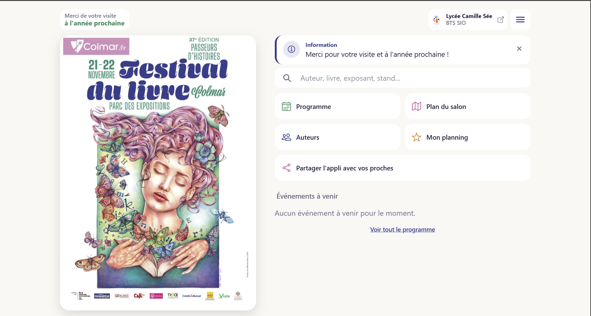

Angular · Ionic · TypeScript
PHP · MySQL / SQL
| Ionic / Angular | src/app/ | |
| TypeScript / RxJS | personne.service.ts | |
| HTML / SCSS | page-personne/ | |
| PHP | php/personne/ | |
| SQL / relational data | toutes-les-personnes.php | |
| HTTP / JSON | personne.service.ts |

<ion-item [routerLink]="[lienPage(), personne.id]" [innerHTML]="itemText(personne)"></ion-item>@if (p.biographie) { <ion-item lines="none"><ion-label class="ion-text-wrap biographie">{{ p.biographie }}</ion-label></ion-item> }public saisieNom = "";
public nom = "";
onFiltrer() { this.nom = this.saisieNom.trim(); }
reinitialiser() { this.saisieNom = ""; this.nom = ""; }CREATE OR REPLACE VIEW PersonneComplete AS
SELECT p.id, p.prenom, p.nom, p.biographie,
ex.nom AS nomExposant, exp.samedi_am,
exp.samedi_pm, exp.dimanche_am, exp.dimanche_pm
FROM personne AS p
LEFT JOIN exposer AS exp ON exp.idPersonne = p.id
LEFT JOIN exposant AS ex ON ex.id = exp.idExposant;